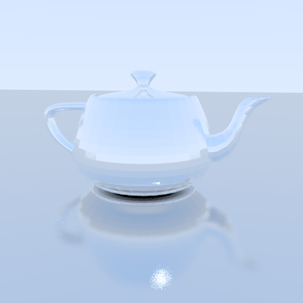
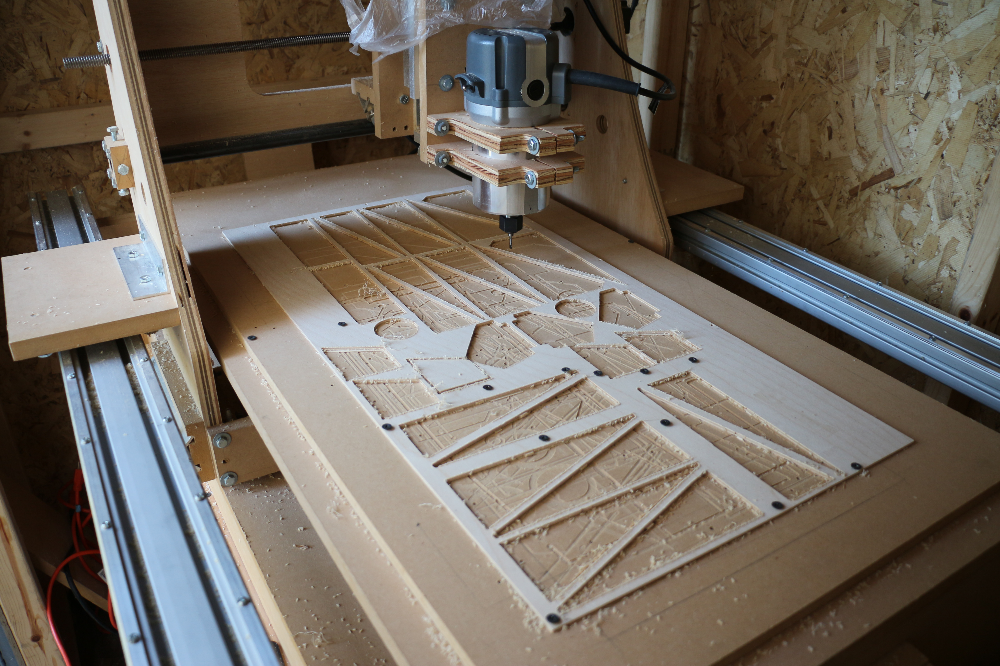

Hello! My name is Jeffrey Ni, and I'm a student currently studying electrical engineering and computer science.
Here are a few of my projects:

A Java raytracer based on the one described in the Ray Tracing in One Weekend series.
A timelapse motion control system that is intended to build off of my previous slider. It uses a Wii nunchuck for input and is designed to control three axes.
It is currently on hold, as the encoders on the motors I have are faulty, and I am currently busy with school.
A custom Nixie tube clock that can show the time and date, display the temperature, and be used as a timer. The PCB was designed in KiCAD and the AVR was programmed in C with AtmelStudio.
I wrote up an Instructables (linked by the image) so others could build this clock too. Github
A simple timelapse slider that had an encoder for input and a menu interface. It used a stepper motor and belt to run along a rail.

A CNC I made out of MDF; the initial design was the JGRO, but I have since modified it. I design parts in Inventor or Fusion 360 and use VCarve to generate the toolpaths.
The system is run by LinuxCNC.
A simple word clock that I built following an Instructables.
I modified the design by adding in a light sensor for dimming and used ULN2803s for controlling the LEDs.
More can be found at my blog, which has assorted build logs and other smaller projects involving my CNC, photography, and more.